管理后台会话溯源、Sandbox 聚焦与 UI 优化报告
今晚做了什么
1会话详情可精确定位主 Sandbox。
2后台对话能看到来源用户、IP 和 User-Agent。
3OSAC、技能、智能体页面完成视觉与布局优化。
4补齐文档、构建验证和截图报告。
后端链路
- 新增内部接口：
GET /api/internal/sandbox/by-task-session/:taskSessionId。 - 查询顺序使用
task_session_sandbox_bindings、canonical sandbox 环境和metadata.taskSessionId关联记录合并去重。 - 管理后台 BFF 的会话 core/detail/infra 改为读取精确 sandbox 结果，不再拉最近 200 条环境做模糊筛选。
- 内部会话摘要增加 app user 解析，返回 displayName、email、status、lastSeenAt、ipAddress 和 userAgent；旧版非 UUID 用户标记为
legacy_user_id。
前端界面
- 会话列表新增来源用户行，搜索可命中用户名、邮箱、IP 和用户 ID。
- 会话详情概览新增“来源用户”面板，关联信息页同步显示用户与来源 IP。
- 技能管理新增二级菜单：全部、启用、归档、已发布、待发布，并增加统计条。
- OSAC 版本页新增发布摘要条和更清晰的发布/待发布/校验状态布局。
- 智能体管理增加专属布局类与健康卡片结构，提升响应式表现。
- 字体切换为 IBM Plex Sans + Noto Sans SC + Fira Code，去掉负字距、视口字体缩放和装饰性径向光斑，圆角收敛到 8px。
二次精修
- 审计日志顶部摘要卡片在桌面和中宽屏保持横向分布。
- 对话管理状态流转升级为编号节点、双状态快照、流程 chip 和触发摘要组合。
- 技能管理移除渲染预览页签，版本历史迁入资源明细，内容与版本页增加上下文摘要。
- 对话管理索引摘要和筛选横排按容器宽度铺满，保留面板内留白。
- 顶部浮动栏新增主题选择器，升级为“主题家族 + 变体”，并自动写入
ADMIN_MANAGEMENT_THEME。 - 主题变量同步覆盖正文色、弱文本、边框、卡片、表格、输入框、状态 chip 和按钮文字色，保障浅/深背景下的阅读对比度。
- 已有主题补充变体：GitHub Light/Dark/Dimmed、Dracula Classic/Soft、Everforest Light/Dark/Hard、One Dark Classic/Pro、Catppuccin Latte/Macchiato/Mocha、Tokyo Night Day/Storm/Night、Nord Polar Night/Frost。
- 新增 10 个主流主题家族：Solarized、Gruvbox、Monokai、Material、Ayu、Rose Pine、Kanagawa、SynthWave、Night Owl、Arc。
验证结果
apps/admin_management npm run type-check：通过。apps/admin_management npm run build：通过，保留 Vite chunk 体积提示。apps/api npm run type-check：当前环境缺少 workspace 解析，报@oneceo/shared无法解析。
截图通过 Vite 页面和 Playwright mock API 数据完成，用于验证布局、信息层级和关键状态展示。
截图
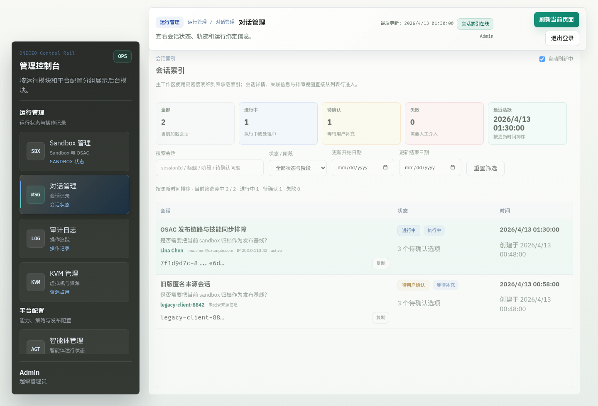
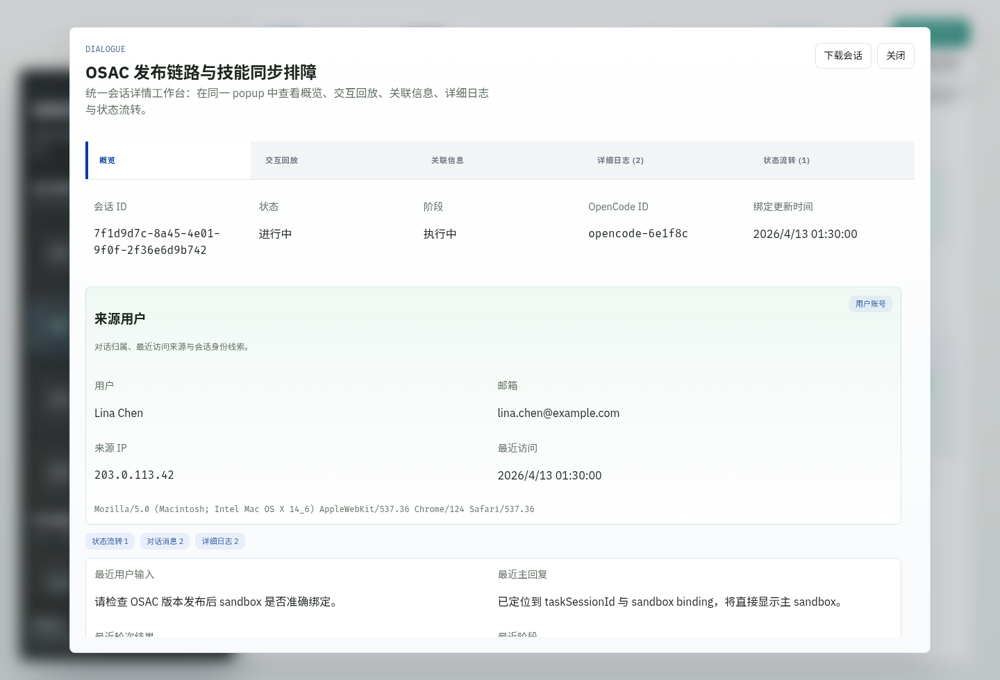
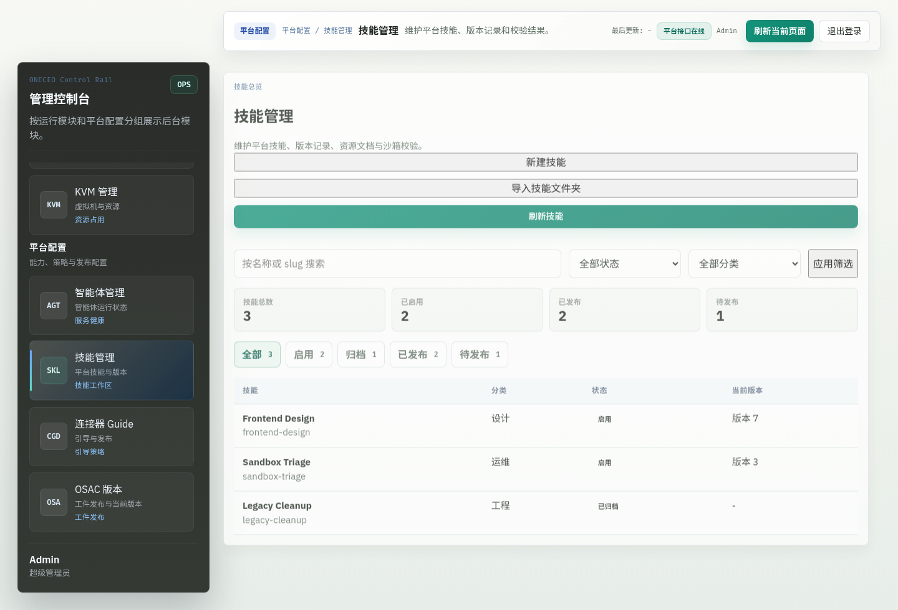
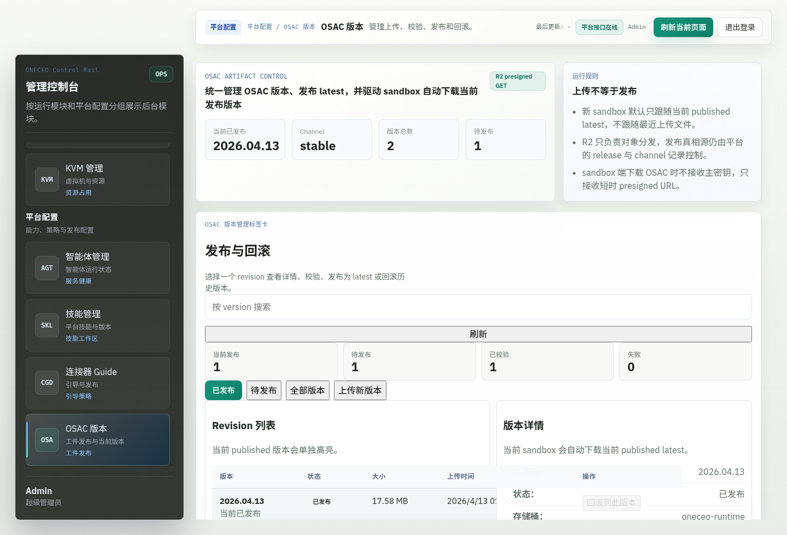
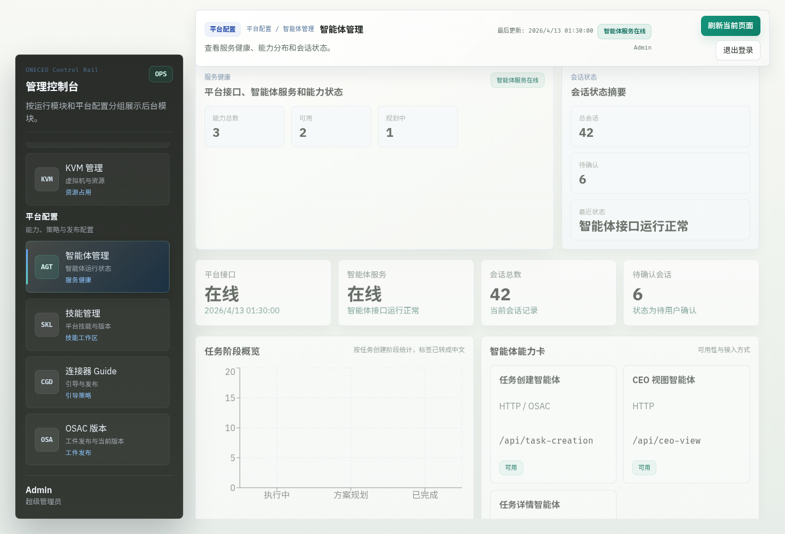
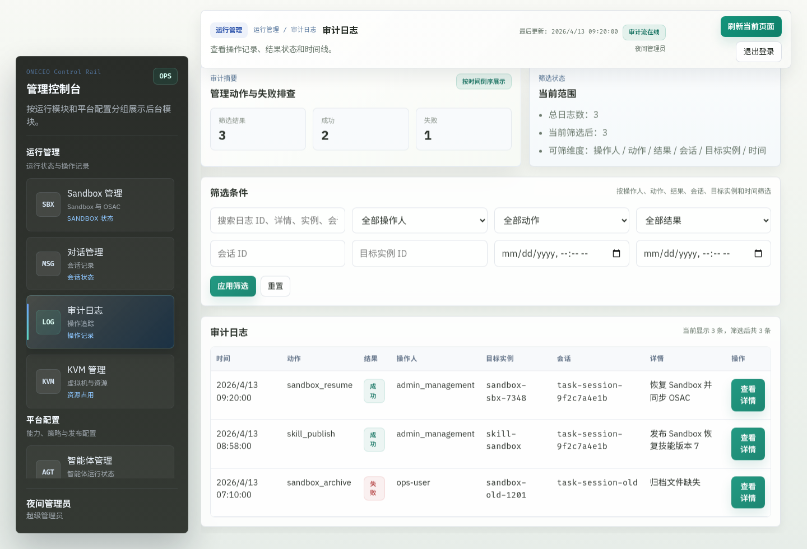
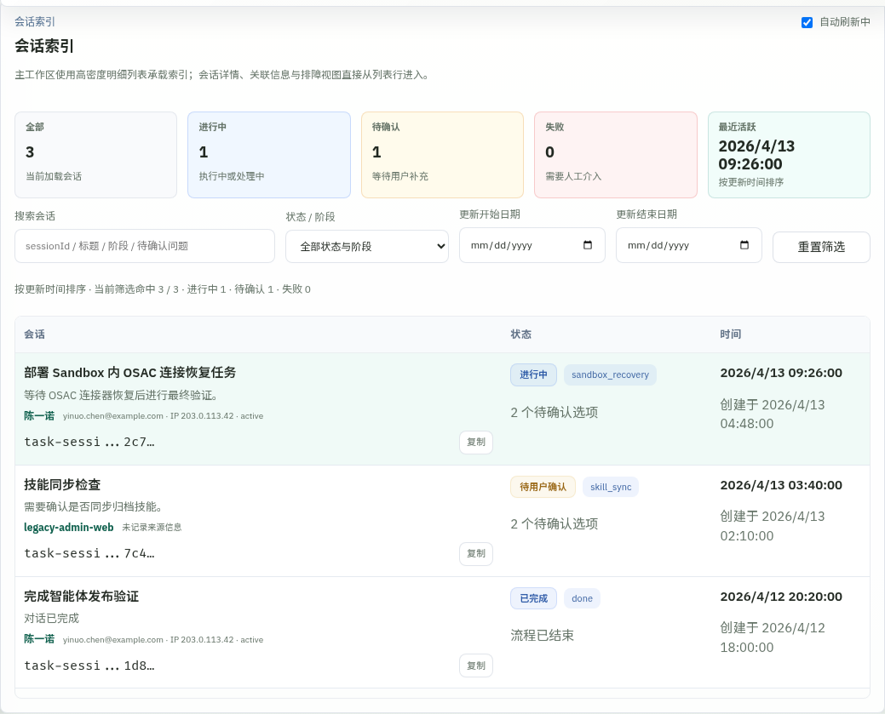
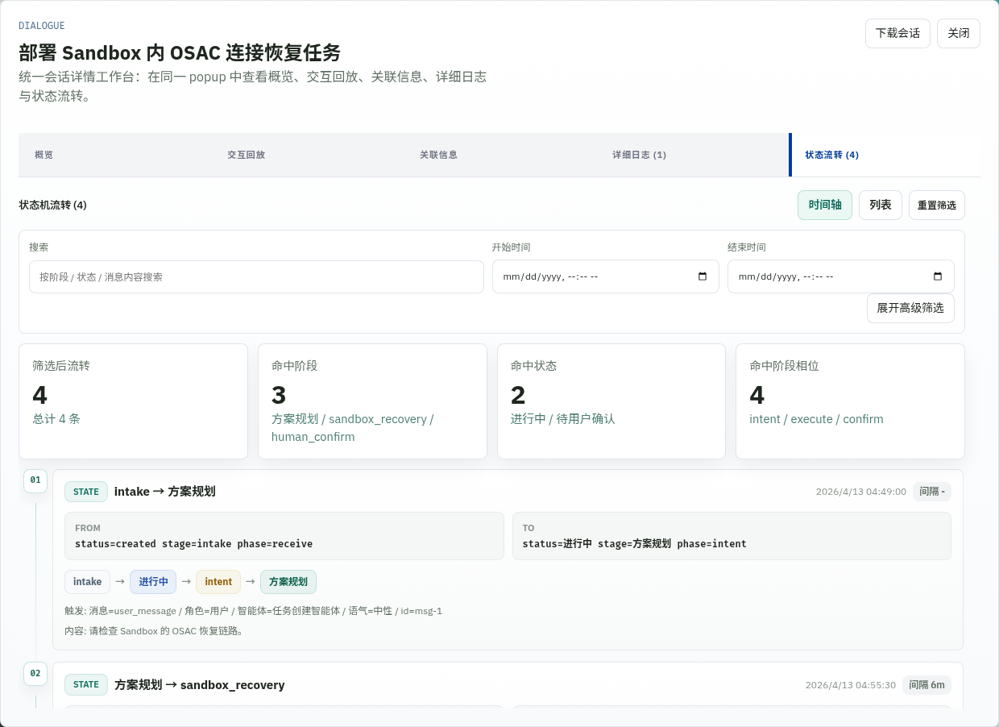
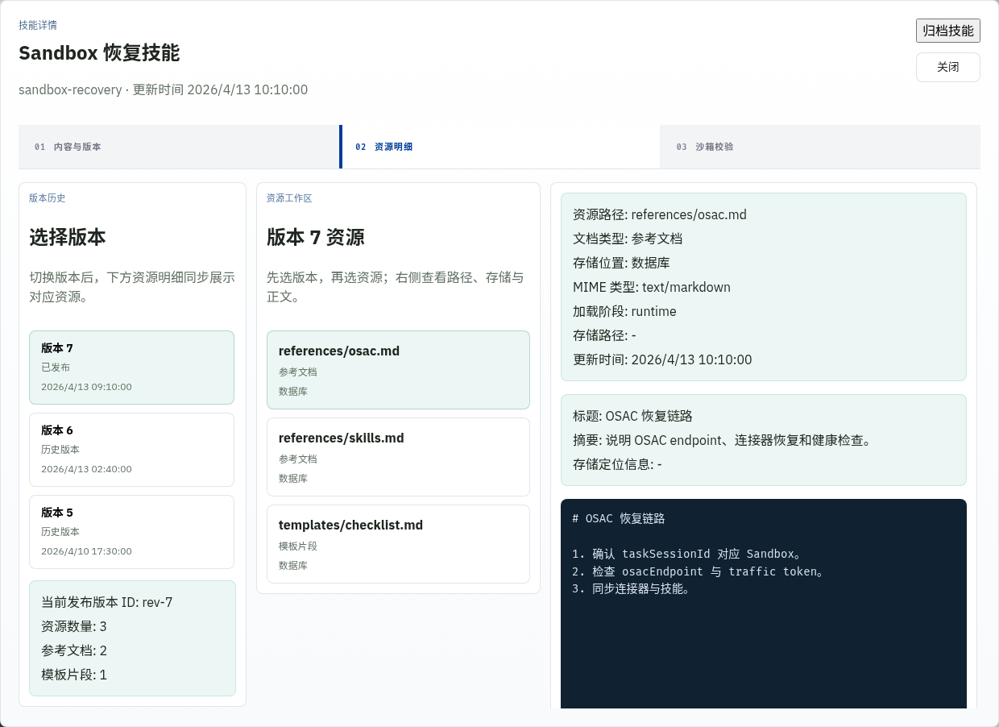
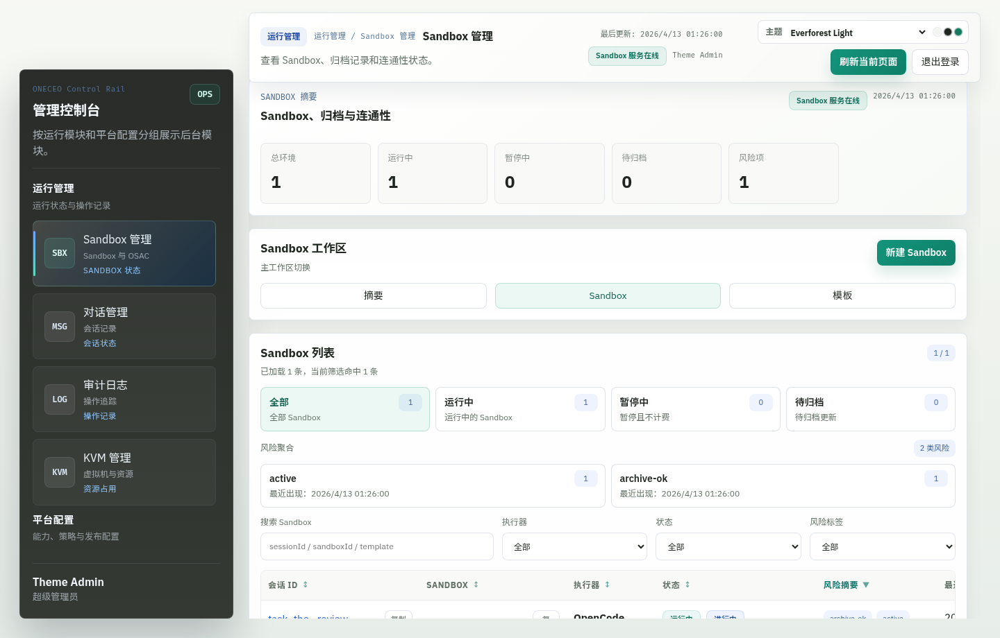
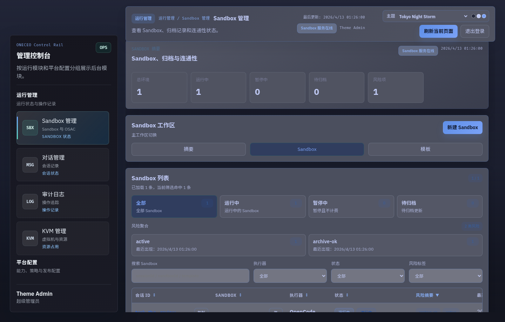
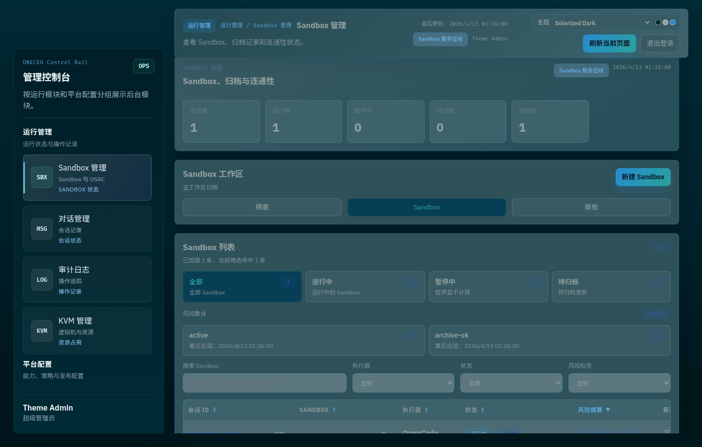
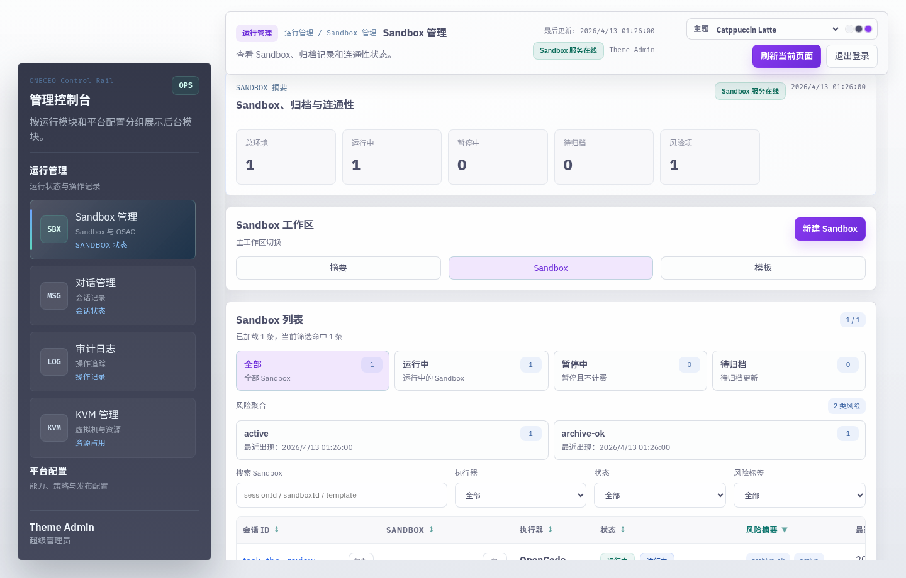